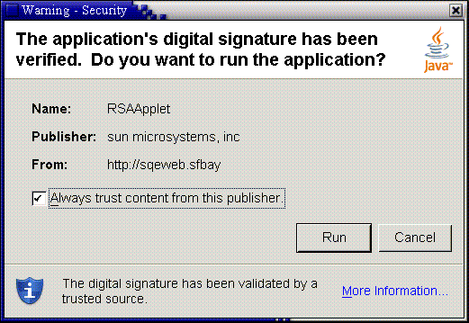

| Documentation Contents |
Security |
Security includes the following topics:
Java applications and applets deployed using Java Web Start and Java Plug-in are by default run in a secure sandbox that defines the set of permissions that code in an untrusted app is granted.
The standard java policy files can be used to enhance the
permissions granted to untrusted apps. In addition to
$JRE_HOME/lib/security/java.policy and
$USER_HOME/.java.policy (used by all java programs),
applications and applets loaded by Java Web Start and Java Plug-in
load two additional policy files, whose location can be configured
by the deployment configuration properties:
deployment.user.security.policy and
deployment.system.security.policy.
The default sandbox, combined with the permissions granted by these policy files, if they exist, determine the permissions granted to untrusted code.
One other policy file, whose location is determined by the
deployment configuration property
deployment.security.trusted.policy, can be used to
restrict the permissions granted to trusted code. With this
property unset (default), trusted code will be granted the
AllPermission permission. With this property set,
trusted code will be granted only the permissions granted to
untrusted code, plus any other permissions granted by the policy
file pointed to by this property.
The deployment configuration also has several properties that
determine how and if code can be trusted. Normally, any signed JAR
file in Java Plug-in, and any set of signed JAR files in Java Web
Start that are listed in a jnlp file requesting the
AllPermission permission, will be granted trust by the
user after the certificate chains have been verified and shown to
the user in a security dialog.
The deployment configuration property
deployment.user.security.trusted.certs points to a
certificate store that contains the certificates already accepted
by the user.
The deployment configuration property
deployment.system.security.trusted.certs can be
configured to point to a certificate store of certificates
pre-accepted by the system administrator.
If a JAR file (in Java Plug-in) or set of JAR files in a jnlp
file requesting the AllPermission permission (in Java
Web Start) is signed by a certificate that is in one of these
stores, it will be trusted.
The deployment configuration property
deployment.security.askgrantdialog.show can control if
the user is permitted to grant trust to new code signed with new
certificates, and the deployment configuration property
deployment.security.askgrantdialog.notinca can further
be used to control if the user is permitted to grant trust to code
signed by certificates whose root certificate is not in one of the
Root Certificate Authority certificate stores (see below).
If the above two properties allow it, and the code is signed with certificate chains that can be properly validated, the user will then be shown a security dialog asking him/her to grant trust to the code.

Click Run and the following dialog appears.

The Root Certificate Authority certificate stores mentioned
above are the union of the certificate stores in the files pointed
to by the properties: deployment.user.security.cacerts
and deployment.system.security.cacerts. By default
deployment.system.security.cacerts points to the
cacerts file in the jre/lib/security
directory. deployment.user.security.cacerts points to
a file that contains any additional cacerts imported
into it using the Certificates dialog in the Security tab of the
Java Control Panel.
One final setting can be used to customize the user experience
in Java Web Start. By default the sandbox does not include the
AWTPermission
showWindowWithoutWarningBanner. Without this
permission, all top-level windows will contain the awt banner
"Java Application Window" or "Java Applet
Window". The deployment configuration property
deployment.security.sandbox.awtwarningwindow can be
used to add this permission to untrusted code.
Copyright © 1993, 2011, Oracle and/or its affiliates. All rights reserved. Please send comments using this Feedback page. |
Java Technology |